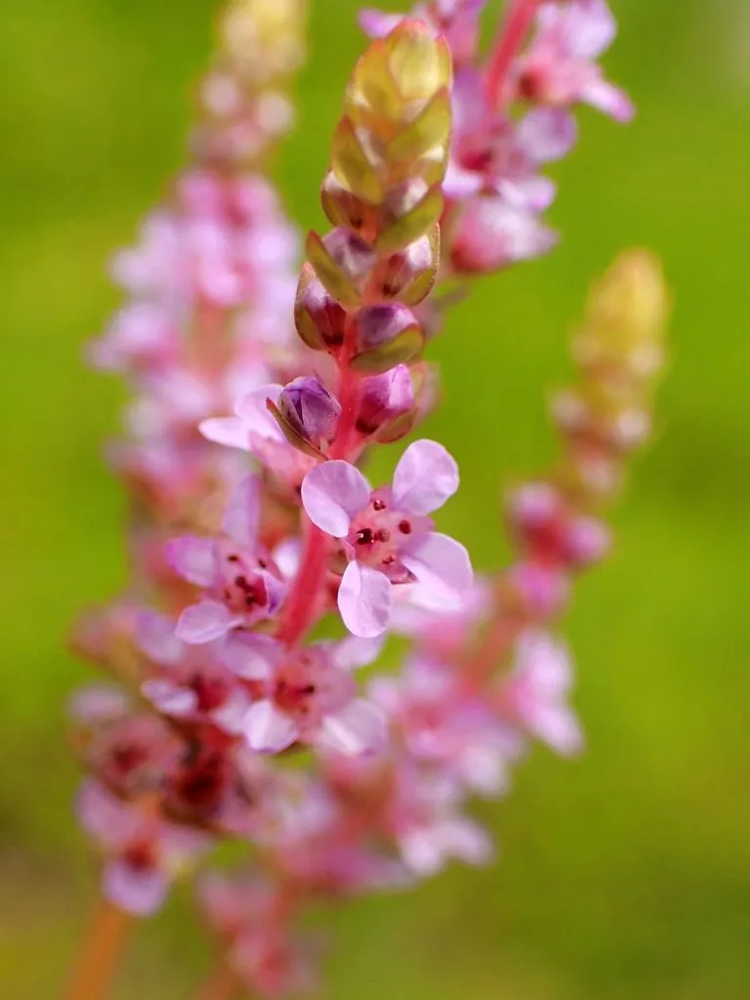

水生植物 · 植物界
圆叶节节菜 Rotala rotundifolia

千屈菜科一年生草本，茎匍匐生根、叶对生近圆形，顶生穗状花序粉红，是水族箱中栽培最广的红色系水草之一。
- 分类
- 门被子植物门纲木兰纲目桃金娘目科千屈菜科属节节菜属
- 栖息环境
- 水田、沟渠、池塘浅水与湿泥地，喜强光、温暖的静水环境
- 地理分布
- 原产亚洲南部至东南部，中国长江以南普遍分布，东南亚各国常见
- 保护级别
- 暂无评估；种群数量大，无濒危风险
物种志
圆叶节节菜为千屈菜科节节菜属一年生草本，高 10–30 厘米，茎匍匐或直立，节上极易生根。叶对生，近圆形或倒卵形，长 0.5–1.5 厘米，全缘，表面深绿，在强光下常泛橙红。花极小，粉红或紫红色，密集组成顶生穗状花序，花期 5–9 月；蒴果椭圆形，种子细小。
圆叶节节菜原产亚洲南部至东南部，中国长江以南的水田、沟渠和湿地常见，成片生长于浅水或湿泥上，适宜水深 0–20 厘米，喜强光、温暖与充足二氧化碳。它适应力强，茎段折断即可生根，是水族箱中栽培最广的红色系水草之一，在强光、低氮条件下叶色转为橙红，常用于中景与后景布置。在稻田中它常被视为杂草，但也可作绿肥与饲料；全草入药，有清热解毒、利水消肿之效。
形态与习性
- 株高10–30 厘米，水族箱中可长至 40 厘米
- 水深适宜水深 0–20 厘米，可挺水或沉水生长
- 水质喜软水至中性水，pH 6.0–7.5，需充足二氧化碳
- 花期5–9 月，顶生穗状花序粉红色
- 光照强光下叶色转红，弱光则保持绿色
- 繁殖茎段扦插，节处生根极快
趣味知识
- 圆叶节节菜在水上和水下形态差别明显：水上叶圆形、贴地生长，水下叶细长、向上伸展。
- 强光与低氮环境会促使花青素积累，使顶芽呈现橙红至粉红色，这是水草玩家追逐的“发色”。
- 它靠茎段繁殖，一段几厘米的断茎落入泥中数天即可生根，因此容易在稻田中蔓延。
- 全草在民间用于煎水外洗，治疮疡与水肿，但内服需遵医嘱。